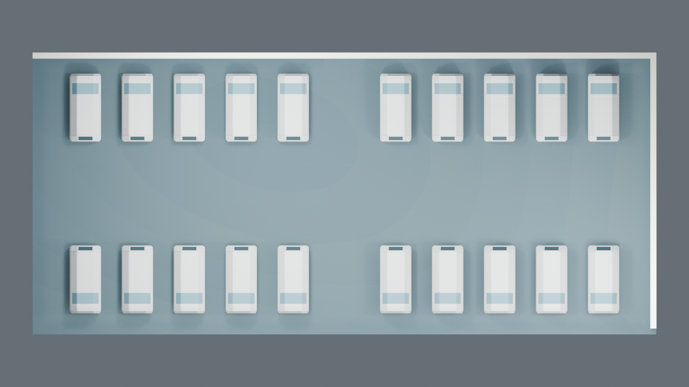
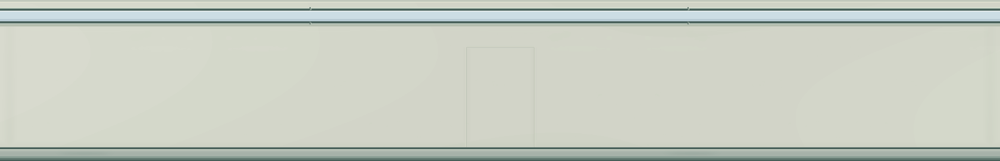

Room 1 / 统一地坪与材料时间感
A 统一方案已选定；新版纹理强度待审。保持暖灰墙面与连续蓝灰地坪，取消随机老化贴片，通过大面色差、真实边缘、保护带接触和结构收口表达时间感。
改前 / 改后 · 总览
同镜头低角度
墙面近景
统一地板

没有十字色带；原有20舱布局不变。
单舱标识与显示屏
 长侧面重复 UNIT 01 已删除
长侧面重复 UNIT 01 已删除 姓名／系统字段与状态条，均为静态占位
姓名／系统字段与状态条，均为静态占位贴图本身

本轮新增 PixelLab 消耗为 0。全室仍含灰模舱，贴图单舱另交付；Blender审查照明不等于最终应急照明。Godot已完成文件导入，游戏表现留到学校确认。